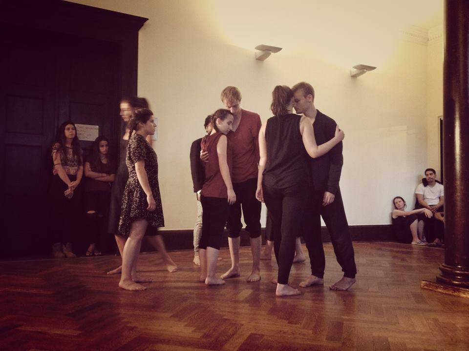
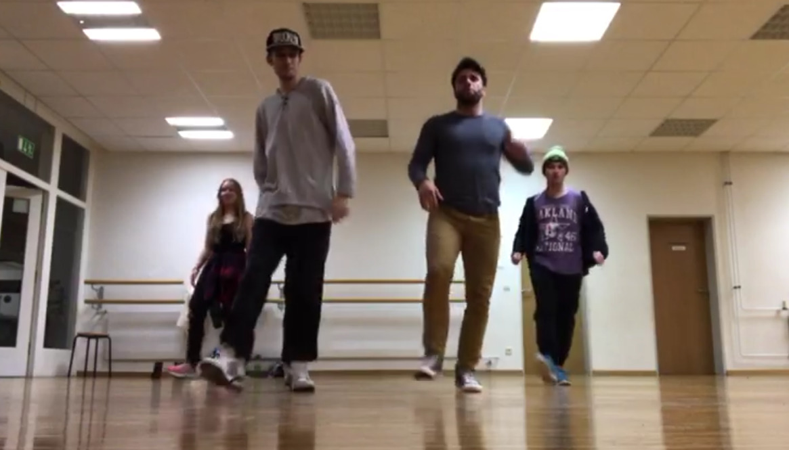
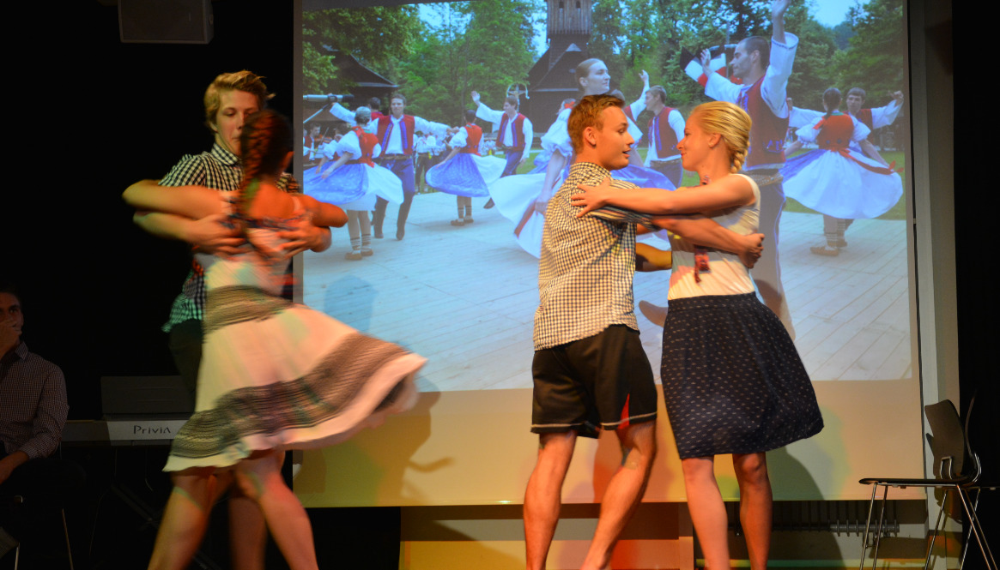

Contemporary
As the workshop was over, I was really happy. At that time, I pretty much stayed the same way I was (100% logically-thinking stubborn kid). However, I got a glimpse into a different "reality", where emotions, empathy and mental freedom could be a part of me.
During the next 3 years, I didn't dance contemporary apart from those annual workshops in Berlin. However, I started with some ballroom dancing, as well as with street dancing later. I loved doing all of them.
Finally, in September 2015 I took up a contemporary dance course at Dashdance. I already knew some concepts from the workshops and got quickly addicted to the weekly course. Dash is an amazing teacher and I learned a lot during the next 10 months.
At this moment, I still dance contemporary and even have a chance from time to time teach someone a few moves and techniques - especially contact improvisation. Since I love teaching, it's something I totally enjoy doing.
Funnily enough, as I have been doing everything from ballroom dancing, street to Zumba, as well, my own contemporary dancing style has been developed and has become a mixture of all the above mentioned.
I am not planning to stop dancing contemporary. It nicely balances the rational part of me and helps me to loosen up my mind, but also to understand people more.

Ballroom
So after the high school course in 2011, I decided to keep going with my dancing partner and we started to attend an advanced ballroom dancing course. We took part in 2 competitions, one regional and the second was a national (Czech Republic), where we got our asses kicked.
In the upcoming years I danced only on highschool balls. That was about it. I still enjoyed it, but didn't take anycourse.
Until recently, as I moved to Germany to study there for one year. I have been attending ballroom dancing course twice a week. I have learned new styles and it's been awesome!
What is great is that those courses are kind of free: "Do you like to dance, chill, whatever...? If yes, visit us!". So if you want to dance, you dance, if you want to learn something, there are always people around who will help you. Do you want to teach someone something new? Anything!
So every time I come, I learn maybe a new dancing figure or two, I teach someone something and have a lot of fun with other people!

Street
And that's kinda strange to me now, because now I value it maybe as much as contemporary dance. Maybe one of the main reasons is that it was all choreography dancing. No freestyle. Basically few months after I stopped visiting the course I forgot everything and street dance was again this unknown art to me.
In the upcoming year or so, I improved my skills mainly by partying and dedicating my time on the dance floor until the early morning hours. I remember it used to be a great challenge to just go full out there and get comfortable with other people staring at me and possibly judging my retarded moves. But I guess it worked...
From the October of 2016, I started regularly attending classes again. This time, however, twice a week for sometimes almost 3 hours. I was very lucky here, because the guys leading the class are amazing freestyle dancers - one of the best I have ever seen or danced with.
From the very beginning, it was clear, that I know how to dance, but definitely not street dance. Very fast I started learning and grinding basics and my dancing finally looks more like cool dancing, rather than funny attempts to move my body somehow.
There is still so much to learn. As I said, I am so lucky, that I have such a great teachers. I am often the one at the course who sucks the most, since all the others have been into it for at least a couple of years if not since childhood. I have been really fond of those classes, maybe because of all of the dances I feel the biggest challenge and growth potential!

Others
Since I love the idea of learning something new, I have always been open to learning new styles. I will list here a few I can remember.
Latin - some of the ballroom dances I have been doing like cha-cha, jive, rumba or tango are categorized as Latin dances. I really love these! Fast, precise movements, a lot of hip moves, fluidity and close body contact do it's magic!
Folk dance - I haven't really got that much into this one, however last year I learned at least some of the basics from the region I come from (tradiční valašské tance). If I have an opportunity to learn more, I won't hesitate!
Zumba - the newest dance, that I have started attending! Zumba is more for fun for me and learning new moves. I do it more because of the friends I meet there. The dance is mainly for girls and what I don't like about it that much is too much of feminine energy. If I don't balance it out with some great gym sessions, it's tiring me.
Pogo - last but definitely not least. I get the chance to dance it only on concerts, which means maybe 2-3 times a year. It's probably the most intense and rewarding one. Even better than contemporary or street dance. There are many elements that make is so amazing, mainly psychological ones. I am willing to get all bruised there and be knocked to the ground again and again. I get shivers down my spine just talking about it!
Others - there are many other dances I have tried, as I already mentioned above. Dancing is a part of my life now and I hope I will never lose touch with it again. There are many things that dancing taught me. It's really not just about moving and jumping around like a monkey!